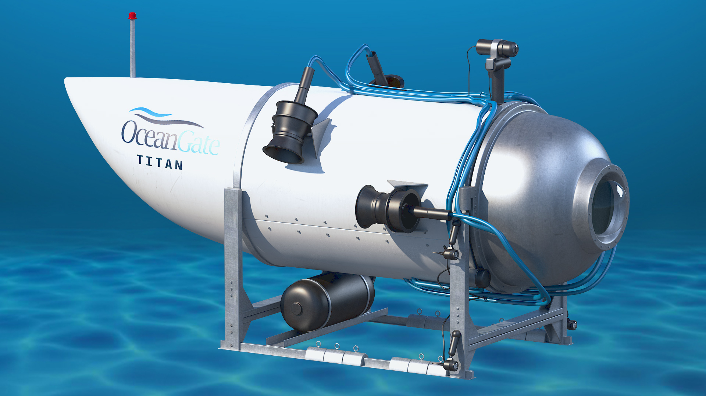

Local
Los ayuntamientos de Mallorca se constituyen este sábado con 26 caras nuevas en las alcaldíasEl Partido Popular consigue hacerse con 23 de las 52 varas de mando en los municipios de la Isla. Por su parte, el PSOE contará con 8 primeros ediles, cuatro menos que hace 4 años, y Més y PI tendrán siete.

Local
Objetivo para la próxima temporada: 20.000 abonados en un estadio del siglo XXISon Moix, ahora más que nunca, será el epicentro del mallorquinismo moderno tras las obras de reforma
Local
Horario y dónde ver la final de la Liga de Naciones España-CroaciaEl combinado de Luis de la Fuente busca el título este domingo tras deshacerse de Italia en las semifinales
TITAN
La empresa dueña del sumergible anuncia que no hay supervivientes

Implosión catastrófica: recreación de la principal hipótesis de la desaparición
· Un amigo de los pasajeros identifica los restos del 'Titan': «Una pieza de aterrizaje y una cubierta trasera»
Las historias personales de los cinco tripulantes
· ¿Cuántos millones se han invertido en el rescate del 'Titan' y quién los pagará?
· Así es por dentro el 'Titan', el submarino desaparecido